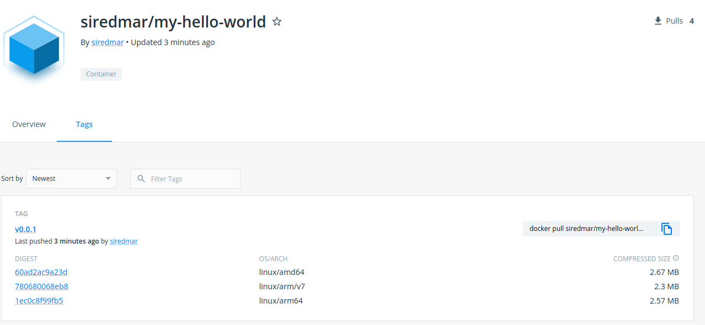

Welcome! Here you will find everything that is needed for this course.
In this training we will talk about the very basics of containers like:
basics
container
container images
containers
compare
virtual machine
We will also take a deeper look at some topics on managing container images:
managing
start and stop
build
store and share
images
We will also take a deeper look at some technical stuff:
technical stuff
use
provide
resources
Many sections in this training are coupled with examples. Feel free to try everything out. It is always a good idea to explore for yourself.
So let's start then!
Wait! Before we begin there are some actions to take.
If you want to follow along and try for yourself you can use a local installation of a container runtime e.g. docker. Follow the linked instructions on how to install docker. If you don't want or can't install docker locally, please make sure that you signed up for a free account on https://github.com and https://gitpod.io. Using gitpod you can also follow along all examples in your web browser. The browser plugin for gitpod is highly recommended as you can simply create an gitpod instance from an github repository -> Gitpod browser extension.
docker
gitpod
Prepare a free account at https://docker.io for uploading your custom docker images.
In this training all examples refer to docker - however many other popular container runtimes are pretty compatible in usage to docker like crictl, podman, nerdctl, ... If you feel adventurous use whatever container runtime you want. If you want to stay safe stick with docker.
crictl
podman
nerdctl
We'll start with the absolute basics before jumping in and do cool stuff.
Did you have any contact with the world of containers yet? Have you ever used containers or docker before?
Tell us!
A container is a standard unit of software that packages up code and all its dependencies so the application runs quickly and reliably from one computing environment to another.
Container runtimes use a technology called namespaces in the Linux kernel to provide the isolated workspace called the container. When you run a container, the runtime creates a set of namespaces for that container.
namespaces
These namespaces provide a layer of isolation. Each aspect of a container runs in a separate namespace and its access is limited to that namespace.
Wait, what does that mean in the language of simple people?
Image source docker.com
The container runtime (today it's docker) runs on the host sharing the same infrastructure. Docker then runs the applications that are encapsulated in containers App A - App F. The running containers share the same underlying Linux Kernel. This means the application does not bring it's own kernel. It just brings what the application needs to run in terms of libraries, dependencies and so on. Each application can be configured to access a limited amount of CPU or RAM resources.
App A
App F
In short, what are the advantages containers bring to us?
Assuming you are running docker you can simply start a command shell on your PC. Assuming from now on that you are using linux.
Running the docker --help command gives various help what you can do.
docker --help
$ docker --help Usage: docker [OPTIONS] COMMAND ...
Just to name a few docker commands:
There many more options. But we will take a closer look later on in this training.
Simple: the container is a running instance of an image
You can instanciate as many containers from the same image as you like. So you are not distributing a container, but a container image.
No, not really. Virtual machines bring a bunch of CPU and memory resources, have their own operating system running an provide a own Linux kernel. The container however shares a bunch of resources like CPU, Memory, disk, Linux kernel and so on.
Head over to this external link for a deeper comparison if you like.
Image source: k21academy.com
The container registry is a place where you can upload your images and provide access for people to pull them too. Popular ones are Docker Hub or the github container registry. They both offer free plans.
registry
The client builds, pushes, pulls and runs images. That's you making the calls what to do.
client
The DOCKER_HOST can be running on the same local machine the client does stuff. However, it can also be some remote machine. The docker daemon performs the action, e.g. it pulls an image from the registry and runs it with parameters the client passed.
DOCKER_HOST
What is a microservice? Image source: BMC
docker run
$ docker run hello-world Unable to find image 'hello-world:latest' locally latest: Pulling from library/hello-world 2db29710123e: Pull complete Digest: sha256:13e367d31ae85359f42d637adf6da428f76d75dc9afeb3c21faea0d976f5c651 Status: Downloaded newer image for hello-world:latest Hello from Docker! This message shows that your installation appears to be working correctly. To generate this message, Docker took the following steps: 1. The Docker client contacted the Docker daemon. 2. The Docker daemon pulled the "hello-world" image from the Docker Hub. (amd64) 3. The Docker daemon created a new container from that image which runs the executable that produces the output you are currently reading. 4. The Docker daemon streamed that output to the Docker client, which sent it to your terminal. ...
Let's jump to https://hub.docker.com and take a quick look. Here you will find plenty already ready to run container images. Most popular open source projects share their container images on Docker Hub, while others are published by individuals. Some are excellent in quality, some are very poor. You always should check what's inside an image before running it.
Let's take a look at some examples how and with which options containers can be started.
Containers can be started and stopped.
$ docker run -d --name nginx nginx $ docker ps CONTAINER ID IMAGE COMMAND CREATED STATUS PORTS NAMES e02973326361 nginx "/docker-entrypoint.…" 5 seconds ago Up 3 seconds 80/tcp nginx $ docker stop nginx $ docker ps CONTAINER ID IMAGE COMMAND CREATED STATUS PORTS NAMES 92715dfd8824 nginx "/docker-entrypoint.…" 9 seconds ago Exited (0) 4 seconds ago nginx $ docker start nginx $ docker ps CONTAINER ID IMAGE COMMAND CREATED STATUS PORTS NAMES e02973326361 nginx "/docker-entrypoint.…" 55 seconds ago Up 3 seconds 80/tcp nginx $ docker stop nginx # delete the container $ docker rm nginx
In this section you will find several examples that shows how containers can be started with different options. Note that all those options can be combined. See docker run --help for a complete list of supported options. For this training we will take a look at the very basic and often needed sections.
docker run --help
$ docker run --rm --env FOO=bar bash env HOSTNAME=f71a3329d8c4 PWD=/ _BASH_BASELINE_PATCH=16 FOO=bar HOME=/root _BASH_VERSION=5.1.16 _BASH_BASELINE=5.1.16 _BASH_LATEST_PATCH=16 SHLVL=0 PATH=/usr/local/sbin:/usr/local/bin:/usr/sbin:/usr/bin:/sbin:/bin
# This is the hosts hostname. No containers involved here. $ cat /etc/hostname devbox # Read from host $ docker run --rm --volume /etc/hostname:/hosts-hostname bash cat /hosts-hostname devbox # Write to host $ echo foo > /tmp/host/writefile $ docker run -it --rm --volume /tmp/host/writefile:/writefile bash $ echo bar > /writefile $ exit $ cat /tmp/host/writefile bar # Volume is read only. write to host fails. $ docker run -it --rm --volume /etc/hostname:/hosts-hostname:ro bash $ echo foo > /hosts-hostname bash: /hosts-hostname: Read-only file system
Start daemonized nginx which is reachable on host port 1234
$ docker run -d --rm -p 1234:80 --name nginx nginx ea2e446129148ffd48744c9589b0240a0b6c591c7ffa17403bee23d10a2ee7c5 $ docker ps CONTAINER ID IMAGE COMMAND CREATED STATUS PORTS NAMES ea2e44612914 nginx "/docker-entrypoint.…" 2 seconds ago Up 1 second 0.0.0.0:1234->80/tcp, :::1234->80/tcp nginx $ curl localhost:1234 <!DOCTYPE html> <html> ... <p>If you see this page, the nginx web server is successfully installed and working. Further configuration is required.</p> ... </html> $ docker kill nginx nginx $ docker ps CONTAINER ID IMAGE COMMAND CREATED STATUS PORTS NAMES
There are several network modes, but we will discuss only two of them today:
Containers can communicate with each other using a network.
TL;DR
bridge
Lets create a network and let two containers talk to each other via the network mynetwork. Note, that the curl container can resolve by the container name nginx.
mynetwork
curl
nginx
$ docker network create mynetwork $ docker run --rm -d --net mynetwork --name nginx nginx $ docker run --rm --net mynetwork --name curl curlimages/curl -s http://nginx <!DOCTYPE html> <html> ... <p>If you see this page, the nginx web server is successfully installed and working. Further configuration is required.</p> ... </html> $ docker kill nginx $ docker network rm mynetwork
A container can be part of the hosts network. This means if the container is in the host network and binds a port, it will be bound on the host.
Example:
$ docker run -d --rm --net host nginx $ curl localhost:80 ...
A modified containers filesystem is not persisted if the container will be removed. It's all gone. Volumes can be used to work around this and keep files alive during container restarts.
Let's create a volume and let a container use it.
$ docker volume create myvolume myvolume $ docker volume ls DRIVER VOLUME NAME local myvolume $ docker run --rm -v myvolume:/data bash bash -c "echo data1 > /data/file" $ docker run --rm -v myvolume:/data bash bash -c "cat /data/file" data1
Let's inspect and delete the volume
$ docker inspect myvolume [ { "CreatedAt": "2022-07-12T22:52:55+02:00", "Driver": "local", "Labels": {}, "Mountpoint": "/var/lib/docker/volumes/myvolume/_data", "Name": "myvolume", "Options": {}, "Scope": "local" } ] $ docker volume rm myvolume myvolume
Using docker build, you can build a Dockerfile to a container image. Lets have a look what we can do here.
docker build
Dockerfile
First off, visit the Dockerfile reference for an in depth view of the whole truth.
tl;dr Dockerfiles consist of directives. The most useful are listed below and are helpful as a reference. However we will talk about them explaining the examples.
Must be the first non-comment line in a Dockerfile. It references the image your image is based on, called base image. It can appear multiple times within one Dockerfile to define different sections during the build.
base image
Usage:
FROM <image> FROM <image>:<tag> FROM <image> --as <name>
Is used to run commands. Each RUN creates a new layer that is part of your docker image.
RUN <cmd> RUN <cmd1> && \ <cmd2>
Is used to define environment variables to the image. Can be combined with ARG.
ENV <key> <value> ENV <key>=<value>
Is used as a build argument. Can be used to control behavior during the build of the image. Defines a variable that users can pass at build-time to the builder with the docker build command using the --build-arg <varname>=<value> flag Multiple variables may be defined by specifying ARG multiple times. Environment variables defined using the ENV instruction always override an ARG instruction of the same name.
ARG <key>[=<default value>]
Sets the working directory for any RUN, CMD, ENTRYPOINT, COPY, and ADD instructions that follow it. It can be used multiple times in the one Dockerfile. If a relative path is provided, it will be relative to the path of the previous WORKDIR instruction.
WORKDIR </path/to/workdir>
Allows you to configure a container that will run as an executable. Command line arguments to docker run <image> will be appended after all elements in an exec form ENTRYPOINT and will override all elements specified using CMD. The shell form prevents any CMD or run command line arguments from being used, but the ENTRYPOINT will start via the shell. This means the executable will not be PID 1 nor will it receive UNIX signals. Prepend exec to get around this drawback. Only the last ENTRYPOINT instruction in the Dockerfile will have an effect.
ENTRYPOINT ["<executable>", "<param>", ...]
The main purpose of a CMD is to provide defaults for an executing container. These defaults can include an executable, or they can omit the executable, in which case you must specify an ENTRYPOINT instruction as well. There can only be one CMD instruction in a Dockerfile. If you list more than one CMD then only the last CMD will take effect. If CMD is used to provide default arguments for the ENTRYPOINT instruction, both the CMD and ENTRYPOINT instructions should be specified with the JSON array format. If the user specifies arguments to docker run then they will override the default specified in CMD. Normal shell processing does not occur when using the exec form. For example, CMD ["echo", "$HOME"] will not do variable substitution on $HOME.
CMD ["<executable>", "<param>", ...] CMD ["<param>", ...] (as default parameters to ENTRYPOINT)
Copies new files or directories and adds them to the filesystem of the image at the path <dest>. <src> may contain wildcards and matching will be done using Go’s filepath.Match rules. If <src> is a file or directory, then they must be relative to the source directory that is being built (the context of the build). <dest> is an absolute path, or a path relative to WORKDIR. If <dest> doesn’t exist, it is created along with all missing directories in its path.
COPY <src> [<src> ...] <dest>
The same as COPY, but src can also be a remote URL.
COPY
ADD <src> [<src> ...] <dest>
Lets inspect some examples and talk about them.
docker build [options] -t <name> <context>
FROM alpine ENTRYPOINT [ "sh", "-c", "echo hello world from $(uname -m)"]
$ cd examples/my-hello-world $ docker build -t my-hello-world:latest . $ docker run --rm my-hello-world:latest hello world from x86_64
Using one single Dockerfile that can be parameterized using build-args. docker build [options] -t <name> --build-arg <key>=<value> <context>
build-args
docker build [options] -t <name> --build-arg <key>=<value> <context>
ARG IMAGE=bash ARG TAG=latest FROM ${IMAGE}:${TAG} ARG IMAGE=bash ARG TAG=latest ENV VERSION=${IMAGE}:${TAG}
$ cd examples/args $ docker build -t mybash:latest . $ docker run --rm mybash:latest env | grep -E -i '^VERSION' VERSION=bash:latest $ docker build -t myalpine:3.15 --build-arg IMAGE=alpine --build-arg TAG=3.15 . $ docker run --rm myalpine:3.15 env | grep -E -i '^VERSION' VERSION=alpine:3.15 $ docker build -t mybash:5.1.16 --build-arg TAG=5.1.16 . $ docker run --rm mybash:5.1.16 env | grep -E -i '^VERSION' VERSION=bash:5.1.16
Default command can be overridden. docker run [options] <image> [cmd]
docker run [options] <image> [cmd]
FROM bash:latest CMD [ "-u" ] ENTRYPOINT [ "date" ]
$ cd examples/cmd $ docker build -t cmd:latest . $ docker run --rm cmd Tue Jul 12 19:39:45 UTC 2022 $ docker run --rm cmd +%d.%m_%H:%M -d @$(($(date +%s))) 12.07_19:39
Simple Dockerfile which is a little less useless than the others. Builds and packs up a custom application.
FROM golang:1.18.3-alpine3.16 COPY main.go /src/main.go COPY go.mod /src/go.mod WORKDIR /src RUN go build -o /app ENTRYPOINT [ "/app"]
$ cd examples/my-html-server $ docker build -t my-html-server:latest . $ docker run -d --rm -p 8080:8080 --name my-html-server my-html-server:latest dc74ba584b345e98986ae307c966af7b9cfad3bca83587d1d3e2f7b12847297c $ curl localhost:8080/hello_world Hello, hello_world $ docker kill my-html-server:latest my-html-server
Cool! But wait, we've got a problem: the image is really big
$ go build -o app $ ls -lh app -rwxrwxr-x 1 user user 6,0M Jul 13 11:10 app $ docker images my-html-server REPOSITORY TAG IMAGE ID CREATED SIZE my-html-server latest 6611934b6447 1 minute ago 334MB
A multistaged build is useful when you don't want to reuse your Dockerfile to build other projects.
FROM alpine:3.16 as builder RUN apk add g++ make COPY src /app/src COPY Makefile /app WORKDIR /app RUN make FROM alpine:latest COPY --from=builder /app/static /static CMD [ "/static" ]
$ docker build -t multi-staged-build:0.1.0-beta.1 . $ docker run --rm multi-staged-build:0.1.0-beta.1 Link statically please
$ docker images multi-staged-build:0.1.0-beta.1 REPOSITORY TAG IMAGE ID CREATED SIZE multi-staged-build 0.1.0-beta.1 8eaeedcc195b 1 minute ago 11.7MB
If you have similar projects that can be build pretty much the same, you can use a builder image. The builder image can be used then to start a container that builds the project. The source and build artifacts are mounted on the hosts filesystem. Once the builder container has compiled the project, the application image can be built copying the build artifacts.
The Dockerfile.builder adds a G++ compiler and make to a basic alpine base image.
Dockerfile.builder
FROM alpine:3.16 as builder RUN apk add g++ make WORKDIR /app
Let's build our builder image and compile the application using this builder image.
$ make builder-image docker build -t builder:latest -f Dockerfile.builder . ... $ make containerized-build-app docker run --rm -v /work/docker-training/examples/build-container:/app builder:latest make g++ -static src/main.cpp -o out/static $ ls -l out/ total 2,3M -rwxrwxr-x 1 user user 2,3M Jul 12 23:39 static
Lets use our artifact that has been previously build and is located in out/. Build the image containing the application and run it using this Dockerfile.application.
out/
Dockerfile.application
FROM alpine:latest COPY out/static /static CMD [ "/static" ]
$ make build-application-image docker build -t static:latest -f Dockerfile.application . Sending build context to Docker daemon 6.197MB Step 1/3 : FROM alpine:latest ---> e66264b98777 Step 2/3 : COPY out/static /static ---> fa97c34b0954 Step 3/3 : CMD [ "/static" ] ---> Running in 9fb5b6b39386 Removing intermediate container 9fb5b6b39386 ---> a0753d1ed0e7 Successfully built a0753d1ed0e7 Successfully tagged static:latest $ docker images static:latest REPOSITORY TAG IMAGE ID CREATED SIZE static latest a0753d1ed0e7 12 hours ago 11.7MB $ docker run --rm static:latest Link statically please
So far we've often seen something like nginx:latest, or alpine:3.16. This is the identifier of the container image. The format is <name>:<tag>.
nginx:latest
alpine:3.16
<name>:<tag>
Examples:
myuser/myimage:1.2.4
docker.io/myuser/myimage:1.2.4
ghcr.io/edgefarm/anck:0.2.0-beta.1
You can pull container images from a container registry like the Docker Hub.
Docker Hub
docker pull <IMAGE>[:TAG]
$ docker images REPOSITORY TAG IMAGE ID CREATED SIZE $ docker pull nginx:1.23.0-alpine 1.23.0-alpine: Pulling from library/nginx 2408cc74d12b: Already exists dd61fcc63eac: Pull complete f9686e628075: Pull complete ceb5504faee7: Pull complete ce5d272a5b4f: Pull complete 136e07b65aca: Pull complete Digest: sha256:8e38930f0390cbd79b2d1528405fb17edcda5f4a30875ecf338ebaa598dc994e Status: Downloaded newer image for nginx:1.23.0-alpine docker.io/library/nginx:1.23.0-alpine
# List all images $ docker images REPOSITORY TAG IMAGE ID CREATED SIZE nginx 1.23.0-alpine f246e6f9d0b2 2 weeks ago 23.5MB # List all image with intermediate images $ docker images --all REPOSITORY TAG DIGEST IMAGE ID CREATED SIZE <none> <none> <none> fa97c34b0954 11 hours ago 11.7MB static latest <none> a0753d1ed0e7 11 hours ago 11.7MB builder latest <none> 1f646257efe6 11 hours ago 185MB <none> <none> <none> 1abb922c546c 11 hours ago 191MB ...
You also can push images to a docker registry. If you are using docker, then you first have to use docker login to authenticate with the Docker Hub.
docker login
$ docker login $ docker images REPOSITORY TAG IMAGE ID CREATED SIZE myuser/myimage 1.0.0 1acc222c578c 2 hours ago 123MB $ docker push myuser/myimage:1.0.0
You also can also re-tag images docker tag <SOURCE_IMAGE>[:TAG] <TARGET_IMAGE>[:TAG]
docker tag <SOURCE_IMAGE>[:TAG] <TARGET_IMAGE>[:TAG]
$ docker pull nginx:1.23.0-alpine $ docker tag nginx:1.23.0-alpine myuser/nginx:myversion $ docker push myuser/nginx:myversion
exercise/webserver-volume-access
exercise/webserver-volume-access/README.md
small as possible
Run
8080
9090
exercise/webserver-volume-access/input
/app/input
see next site...
$ echo "hello world" > examples/webserver-volume-access/input $ curl localhost:9090 hello world $ echo "I am standing on the moon" > examples/webserver-volume-access/input $ curl localhost:9090 I am standing on the moon
Questions on the exercise?
There are millions of right solutions, but here is one.
FROM golang:1.18.3-alpine3.16 as builder RUN apk add make WORKDIR /app COPY go.mod /app/go.mod COPY main.go /app/main.go COPY Makefile /app/Makefile RUN make FROM scratch COPY --from=builder /app/webserver-volume-access /webserver-volume-access ENTRYPOINT ["/webserver-volume-access", "-i", "/app/input"]
Let's see it in action
$ cd exercise/webserver-volume-access $ base64 -d Dockerfile.solution > Dockerfile $ docker build -t webserver-volume-access:latest . $ docker images webserver-volume-access:latest REPOSITORY TAG IMAGE ID CREATED SIZE webserver-volume-access latest 53b1241109e3 22 hours ago 6.28MB $ echo "hello world" > input $ docker run -d --rm -p 9090:8080 -v $(pwd)/input:/app/input --name webserver-volume-access webserver-volume-access:latest $ curl localhost:9090 hello world $ echo "I am standing on the moon" > input $ curl localhost:9090 I am standing on the moon $ docker kill webserver-volume-access
If you want to build a container image for a differen CPU architecture you can do it two ways:
Now we are focusing on emulating the target hardware.
There are several ways to build so called multi-arch container images. One way is docker buildx. See the full reference here.
docker buildx
docker images
First off, qemu must be installed. Run docker run --rm --privileged multiarch/qemu-user-static --reset -p yes
docker run --rm --privileged multiarch/qemu-user-static --reset -p yes
$ cd examples/my-hello-world $ docker buildx create --name mycrossbuilder --platform linux/amd64,linux/arm64,linux/arm/v7 mycrossbuilder $ docker buildx ls NAME/NODE DRIVER/ENDPOINT STATUS PLATFORMS mycrossbuilder docker-container mycrossbuilder0 unix:///var/run/docker.sock inactive linux/amd64*, linux/arm64*, linux/arm/v7* $ docker buildx inspect mycrossbuilder --bootstrap [+] Building 2.9s (1/1) FINISHED => [internal] booting buildkit 2.9s => => pulling image moby/buildkit:buildx-stable-1 2.1s => => creating container buildx_buildkit_mycrossbuilder0 0.8s Name: myCrossBuilder Driver: docker-container Nodes: Name: mycrossbuilder0 Endpoint: unix:///var/run/docker.sock Status: running Platforms: linux/amd64*, linux/arm64*, linux/arm/v7*, linux/amd64/v2, linux/amd64/v3, linux/riscv64, linux/ppc64le, linux/s390x, linux/386, linux/mips64le, linux/mips64, linux/arm/v6
$ docker buildx use mycrossbuilder $ docker login $ docker buildx build -t myuser/my-hello-world:v0.0.1 . --push --platform linux/amd64,linux/arm64,linux/arm/v7 [+] Building 9.1s (11/11) FINISHED => [internal] load .dockerignore 0.4s => => transferring context: 2B 0.0s => [internal] load build definition from Dockerfile 0.3s => => transferring dockerfile: 111B 0.0s => [linux/amd64 internal] load metadata for docker.io/library/alpine:latest 4.4s => [linux/arm/v7 internal] load metadata for docker.io/library/alpine:latest 4.4s => [linux/arm64 internal] load metadata for docker.io/library/alpine:latest 4.4s => [linux/arm64 1/1] FROM docker.io/library/alpine@sha256:686d8c9dfa6f3ccfc8230bc3178d23f84eeaf7e457f36f271ab1acc53015037c 0.1s => => resolve docker.io/library/alpine@sha256:686d8c9dfa6f3ccfc8230bc3178d23f84eeaf7e457f36f271ab1acc53015037c 0.0s => [linux/amd64 1/1] FROM docker.io/library/alpine@sha256:686d8c9dfa6f3ccfc8230bc3178d23f84eeaf7e457f36f271ab1acc53015037c 0.0s => => resolve docker.io/library/alpine@sha256:686d8c9dfa6f3ccfc8230bc3178d23f84eeaf7e457f36f271ab1acc53015037c 0.0s => [linux/arm/v7 1/1] FROM docker.io/library/alpine@sha256:686d8c9dfa6f3ccfc8230bc3178d23f84eeaf7e457f36f271ab1acc53015037c 0.1s => => resolve docker.io/library/alpine@sha256:686d8c9dfa6f3ccfc8230bc3178d23f84eeaf7e457f36f271ab1acc53015037c 0.0s => exporting to image 4.2s => => exporting layers 0.0s => => exporting manifest sha256:60ad2ac9a23d5a19f3ebc8933a57d31a54aebd88284d05c2ca988f7bfe4003f9 0.0s => => exporting config sha256:cdfa935c26083fd3dc54d80ed2113379d84b443c99cac92e25479378bf98cb76 0.0s => => exporting manifest sha256:1ec0c8f99fb5790b1f6da1748fadd8ef9e89b5cc0af7e71c3193173beb872a93 0.0s => => exporting config sha256:dab62f48db3d7a2a5fc10caab9144053a4a2a2ddce988ba5e369ccf26580edfe 0.0s => => exporting manifest sha256:780680068eb895286d21482f1784cf16bcb7b272b208575110b44c6bd88b88c5 0.0s => => exporting config sha256:e7eae793447341be74d65e36e2dfa50bd8a6079149e8c7cf1e0b216d242066b8 0.0s => => exporting manifest list sha256:f9b64f65689285a8b799f54c1e3c80b0b4976b4fdf5f288ba8c9498c6f677a8e 0.0s => => pushing layers 2.2s => => pushing manifest for docker.io/myuser/my-hello-world:v0.0.1@sha256:f9b64f65689285a8b799f54c1e3c80b0b4976b4fdf5f288ba8c9498c6f677a8e 1.9s => [auth] myuser/my-hello-world:pull,push token for registry-1.docker.io 0.0s => [auth] library/alpine:pull myuser/my-hello-world:pull,push token for registry-1.docker.io 0.0s
Looking at Docker Hub we see that the image is pushed as multi arch image.

Running this on my laptop (amd64)
$ docker run --rm myuser/my-hello-world:v0.0.1 Unable to find image 'myuser/my-hello-world:v0.0.1' locally v0.0.1: Pulling from myuser/my-hello-world 2408cc74d12b: Already exists Digest: sha256:f9b64f65689285a8b799f54c1e3c80b0b4976b4fdf5f288ba8c9498c6f677a8e Status: Downloaded newer image for myuser/my-hello-world:v0.0.1 hello world from x86_64
Running this on my Raspberry Pi 4 (aarch64)
docker run --rm myuser/my-hello-world:v0.0.1 Unable to find image 'myuser/my-hello-world:v0.0.1' locally v0.0.1: Pulling from myuser/my-hello-world 2408cc74d12b: Already exists Digest: sha256:f9b64f65689285a8b799f54c1e3c80b0b4976b4fdf5f288ba8c9498c6f677a8e Status: Downloaded newer image for myuser/my-hello-world:v0.0.1 hello world from aarch64
There are some security considerations and best practices to take into account:
For a very much complete list please visit Docker Security Best Practices
Tools you must know when working with docker.
docker-compose: Compose is a tool for defining and running multi-container Docker applications. Docs dobi: A build automation tool for Docker applications. dobi
docker-compose
dobi
Thats all for now. Are there last questions?
Thank you!